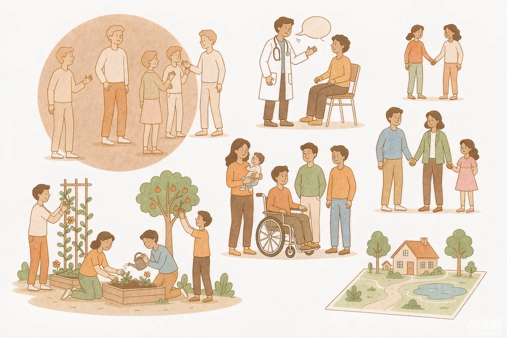

社会支持与归属
研究支持网络的结构与功能对心理健康的作用，关注归属感、互助关系与孤立状态在不同群体中的表现。研究区分情感支持、信息支持与实际帮助，指出网络规模不如可依赖关系的质量重要。
应用心理学 · DISCIPLINE
Community Psychology
以社区为单元促进心理健康与社会融入
社区心理学关注个体与社区、社会结构之间的关系，强调预防、赋权与初级干预，研究社会支持、社区归属感、集体效能与弱势群体的心理适应。它倡导从系统层面理解问题，重视社区参与、合作研究与资源链接，而非仅聚焦个体治疗。例如，面对某社区青少年活动空间不足的问题，工作者会先了解居民的需求与现有组织，再与社区共同设计活动与互助网络，而不是只提供个别辅导。从业者与社区组织、公共服务机构协作，推动心理健康促进与社会公平，尊重当地文化与居民主体性。其价值在于把支持嵌入日常关系与制度，提升社区自身的应对能力。

这个分支主要研究什么
研究支持网络的结构与功能对心理健康的作用，关注归属感、互助关系与孤立状态在不同群体中的表现。研究区分情感支持、信息支持与实际帮助，指出网络规模不如可依赖关系的质量重要。
探讨居民参与决策与资源控制如何提升自主性，分析赋权过程中的能力建设与制度条件。实践中包括居民议事、共同制定规则与参与项目评估；若只是象征性征询意见，赋权容易流于形式。
强调在问题显现前改善风险环境，讨论初级预防与二级干预的区别及在社区层面的实施路径。例如通过改善公共空间与邻里联系减少孤立，比对已经出现严重困扰的个体提供事后服务更前置。
关注居民对共同行动能力的信念如何影响社区秩序与公共事务参与，分析信任与组织联系的作用。当居民相信邻里愿意共同维护环境时，更可能参与志愿活动与相互照看，形成正向循环。
研究经济困难、迁移与歧视情境下的心理适应，重视文化视角与结构性因素，避免个体化归因。迁移者常同时面对语言障碍、身份变化与支持网络断裂，服务需要适配其文化经验与实际处境。
这一分支能带来什么
学习社区心理学能让你把困扰放在关系与制度背景中理解，不再只盯着个人责任。你会更善于识别身边的支持网络、理解预防与赋权的意义，也能更理性地评估社区项目是否真正回应了需要。
一项奠定了这个领域的研究
20世纪60年代，美国启动面向低收入家庭儿童的起步计划，提供早期教育、健康筛查、营养与家庭参与服务，强调由社区机构与地方家长共同参与。项目在发展过程中接受了多项评估，研究总体显示参与者在入学准备与部分认知、社会性指标上有改善，但长期效果的大小与持续性存在不同结论。它成为社区综合干预与预防取向的重要范例，也推动了关于服务质量、家庭参与和项目成本效益的持续讨论。
还没定论的问题，往往最值得追问
随机对照试验便于评估效果，却可能与社区自主参与的原则冲突。争论集中在如何既保证证据质量，又尊重居民对研究问题和方式的发言权，以及谁拥有结果的解释权。
赋权强调居民掌控资源，但项目中决策权常仍掌握在机构与专业者手中。批评者担心参与变成形式化征询，争论围绕如何衡量真实权力转移，以及如何避免把结构性问题转化为社区自身责任。
把概念带回日常观察
在纸中央写下自己的名字，把能提供情感、信息或实际帮助的人围在四周，用线条标明联系强弱。看看哪些关系被忽略、哪里可能再建立连接，只作梳理，不评判关系亲疏。仅作自我观察，不构成诊断或治疗建议。
怎么研究，用在哪里
进入这个分支的术语入口
与这一领域密切相关的名字
提出危机干预理论，推动预防导向的社区心理健康服务。
强调社区情境与赋权，被视为社区心理学的重要奠基者之一。